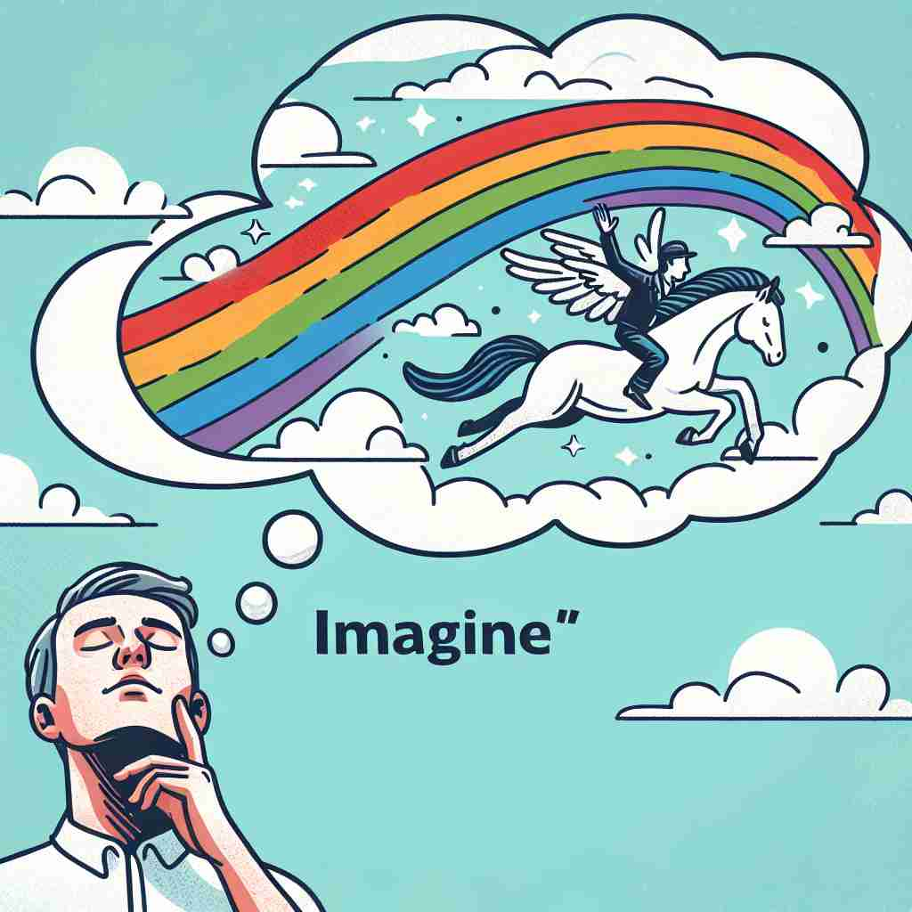

💬 She likes to imagine a unicorn in her dream. 她喜欢在梦中想象一只独角兽。

💬 They love to imagine a cozy room in their dream home. 他们喜欢想象梦中家园里的温馨房间。
💬 He likes to imagine a landscape before he starts painting. 他喜欢在开始绘画之前想象一个风景。

💬 When I close my eyes, I can imagine a rainbow in the sky. 当我闭上眼睛时，可以想象天空中的彩虹。
🧠 想象'imagine'这个词就是在你的头脑中画一幅画或形成一个想法。无论是创造性思考、做出假设，还是难以相信某事，都源于在头脑中形成画面或想法这一核心含义。通过联想在脑海中'作画'的过程，你可以轻松记住和理解'imagine'的各种用法。
🔈 [ɪ'mædʒɪn]
🗝️ v. to form a picture or idea in your mind 在脑海中形成一个画面或想法
🎭 在一个安静的图书馆里，一个小女孩正在阅读一本关于魔法王国的书。她闭上眼睛，脑海中慢慢浮现出一幅画面：一座华丽的城堡被彩虹环绕，这正是她根据书中描述所想象的景象。
💬 Can you imagine living on the moon? 你能想象生活在月球上吗？
🌳 由前缀 "im-" （使…进入某状态）加上词根 "magin"（可能来源于拉丁语 "imaginari"，意为想象）组成，构成动词，表示 "想象，设想"。
🕸️ 1. imaginative: 富有想象力的 2. imagery: 意象 3. imaginable: 可想象的
💡 记忆 "imagine" 时，可以联想为 "in" + "mage"，即进入一种想象中的图像状态，帮助自己理解为创造或思考脑海中的画面。